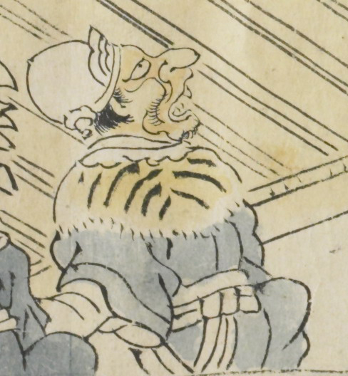

冠をかぶり、虎皮の襟巻きをした鬼。青い衣服を身にまとい、上方を眺めている。黄色い体で、軽く口をあけている。白い帯をしている。
出典：親書誌：U426_nichibunken_0079：酒天童子絵巻；シュテンドウジエマキ／日付：2006／資源識別子：U426_nichibunken_0079_0003_0005
Copyright (c)2010- International Research Center for Japanese Studies, Kyoto, Japan. All rights reserved.